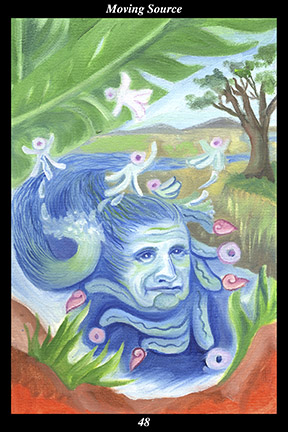

 | IMAGEAn ancient spirit, part woman and part river, flows joyfully across the land. The water that splashes from the river takes on the form of jade spirit helpers. The waves and currents of the river are drawn as jade beads and speech glyphs and small conch shells. |
INTERPRETATION
This hexagram depicts the living edge of renewal. The woman symbolizes that which gives birth and nourishes life. The river symbolizes the ever-changing flow of creation that persists in its never-changing direction. Taken together, this ancient spirit symbolizes spirit’s never-changing love for life’s ever-changing journey. The jade spirit helpers symbolize the unseen forces who nourish and enrich all they touch. The jade beads and speech glyphs and small conch shells symbolize the precious nature of the ever-renewing song of that single force which
benefits all life and spirit. Taken together, these symbols mean that you bring
benefit to others by responding to the headlong rush of events with spontaneity, daring, and creativity.
ACTION
The feminine half of the spirit warrior adapts to change with the ease and fluidity of running water. Life continually creates, renewing itself every moment, keeping the world forever fresh and new: by learning from nature how to move through the seasons of springtime birth, wintertime death, and springtime rebirth, we come to dwell on the living edge of renewal. The wisdom of the creative forces reveals itself most clearly in the way that things can endure and attain great age by maintaining their living edge of renewal. By adopting this strategy as their way of life, spirit warriors move the living source of renewal through the landscape of their lifetimes and the generations. Such wisdom is based on the essential nature of the creative forces, whose masculine half creates discovery and exploration and whose feminine half creates enjoyment and fulfillment—a duality whose union of curiosity and playfulness reveals the source of creation within each individual. In this sense, the spirit warrior’s journey is akin to a sacred game, the moves of which require quick-witted improvisation and the purpose of which recedes ever further into the mists of sublime truth. This is a time for acting without calculation or premeditation: trust that you have attained that elegance and ease of spirit which marks those whose self-confidence stems from a sense of inner preparedness that no external event can disturb. Find enjoyment in discovery and fulfillment in exploration, nurturing your curiosity with wonder and your playfulness with light-heartedness. Above all, don’t dam up the source by fearing to make mistakes: if you rely on your intuition, instinct, and intention, then making on-going adjustments and continuous corrections becomes the living path by which balance and harmony are achieved.
INTENT
Just as someone who has mastered a musical instrument can improvise at will, you are able to move through this time with an untroubled spirit, adapting and responding to sudden and unforeseen changes by initiating sudden and unforeseen changes of your own. Just as living music gains vitality and power when played by more than one musician, your efforts are in harmony with the unseen forces and aided by innumerable spirit helpers. Just as master musicians become the music they play, you become the moving source of renewal that you express. Just as the perennial presence of music is given new forms of expression every generation, your actions advance the collective work of renewing the perennial truth every generation.
SUMMARY
Reflect on those times in the past when you got stuck in opinions and a particular point of view. Think back on how exciting it was to break free of that oppression. Turn your attention to your present views and actions, identifying those which are damming up your joy of life and sense of discovery. Think forward to how exciting it will be to break free of that oppression.
THE LINE CHANGES
1° Meetings with something new are often clouded by emotions. First impressions, insights, and explanations are almost always more intuitive than comprehensive. Revisit those moments you encountered something for the first time and remove any definitions or decisions you formed them.
2° Not all partnerships last forever—one must end that the next may begin. But this need not be troubling—if companions know the road forks eventually, they part with the best of feelings when the time comes. Sudden as lightning, everything changes at once—you are in accord with fate.
3° Your peers take the road of speaking but you take the road of listening. Upon first hearing the message, they begin propagating it—you continue listening for its echoes in the relationships between things. The source of the river is high in the mountains and nearly uninhabited.
4° Having to publicly act on your ethics is difficult, especially when it comes at the expense of partnerships you value greatly. But parting ways when those you admire take the wrong road is a necessary step in the forging of your true self. Use this conflict to restore a wider unity.
5° Now you are ready to speak and your peers ready to listen. Their endeavors suddenly become tributaries of your endeavor’s river. Once again, they rush to propagate the new message—and once again, you stay back, listening to the perennial murmur of the river’s source.
6° You cannot control how others see you—but you can control how they don’t see you. If you act like the stereotype people expect, it is your own fault for stepping off the path of freedom. Follow no example, mimic no one—leave a hole in the world when you are gone.